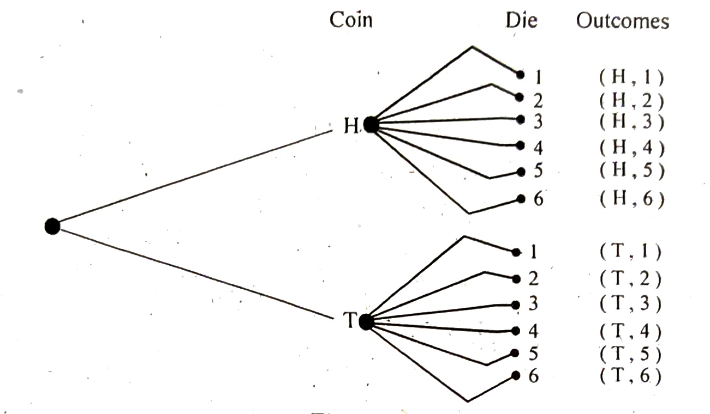

{kind=link}
Chapter 8 Set Theory · printed page 6 (scan 6) — Example 8.6 with coin/die tree diagram (Figure-9), §8.20 Algebra of Sets, start of Example 8.7
Example 8.6.
A coin is tossed and a die is rolled. Use a tree diagram to find the number of outcomes.
Solution: With the use of a tree diagram, the number of outcomes can be determined as shown in Figure-9.

8.20 ALGEBRA OF SETS
Having defined the operations of union, intersection, difference and complementation for sets, we may formulate an “algebra of sets”. Many of the basic laws of set theory are analogous to the rules of algebra of real numbers.
(1) Identity Laws
(i) $A \cup \phi = A$ (ii) $A \cap \phi = \phi$ (iii) $A \cup S = S$ (iv) $A \cap S = A$
(2) Idempotent Laws
(i) $A \cup A = A$ (ii) $A \cap A = A$
(3) Associative Laws
(i) $(A \cup B) \cup C = A \cup (B \cup C)$ (ii) $(A \cap B) \cap C = A \cap (B \cap C) = A \cap B \cap C$
(4) Commutative Laws
(i) $A \cup B = B \cup A$ (ii) $A \cap B = B \cap A$
(5) Distributive Laws
(i) $A \cup (B \cap C) = (A \cup B) \cap (A \cup C)$ (ii) $A \cap (B \cup C) = (A \cap B) \cup (A \cap C)$
(6) Complement Laws
(i) $A \cup \bar{A} = S$ (ii) $A \cap \bar{A} = \phi$ (iii) $\overline{(\bar{A})} = A$ (iv) $A \cap \phi = \phi$
(7) Demorgan's Laws
(i) $\overline{(A \cup B)} = \bar{A} \cap \bar{B}$ (ii) $\overline{(A \cap B)} = \bar{A} \cup \bar{B}$
Example 8.7.
If $S=\{0, 1, 2, 3, 4, 5, 7, 9, 10\}$, $A=\{1, 2, 3, 5, 9\}$, $B=\{3, 5, 7, 9, 10\}$ and $C=\{4, 7, 9, 10\}$. Show that:
(i) $(A \cup B) \cup C = A \cup (B \cup C)$ (ii) $(A \cap B) \cap C = A \cap (B \cap C)$
(iii) $A \cup (B \cap C) = (A \cup B) \cap (A \cup C)$ (iv) $A \cap (B \cup C) = (A \cap B) \cup (A \cap C)$
(v) $\overline{(A \cup B)} = \bar{A} \cap \bar{B}$ (vi) $\overline{(A \cap B)} = \bar{A} \cup \bar{B}$
(vii) $(A \cap B) \cup (\bar{A} \cap B) = B$ (viii) $A \cup (\bar{A} \cap B) = A \cup B$
Solution: Here, $S=\{0, 1, 2, 3, 4, 5, 7, 9, 10\}$, $A=\{1, 2, 3, 5, 9\}$, $B=\{3, 5, 7, 9, 10\}$ and $C=\{4, 7, 9, 10\}$. Therefore